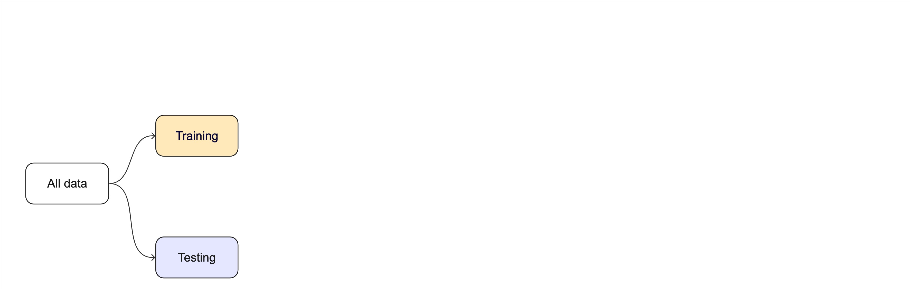

03:00
1 - Introduction
Survival analysis with tidymodels
Welcome!
Wi-Fi network name
TODO-ADD-LATER
Wi-Fi password
TODO-ADD-LATER
Workshop policies
- Please review the code of conduct: https://events.linuxfoundation.org/user/attend/code-of-conduct/
Who are you?
You can use the magrittr
%>%or base R|>pipeYou are familiar with functions from dplyr, tidyr, ggplot2
You have exposure to basic concepts of survival analysis
You are familiar with the basic predictive modeling workflow
You do not need intermediate or expert familiarity with modeling or ML
Who are tidymodels?
- Simon Couch
- Hannah Frick
- Emil Hvitfeldt
- Max Kuhn
. . .
Many thanks to Davis Vaughan, Julia Silge, David Robinson, Julie Jung, Alison Hill, and Desirée De Leon for their role in creating these materials!
Asking for help
. . .
🟪 “I’m stuck and need help!”
. . .
🟩 “I finished the exercise”
👀

Plan for this workshop
- Your data budget
- What makes a model
- Evaluating models
- Tuning models
Introduce yourself to your neighbors 👋
Log in to Posit Cloud (free): TODO-ADD-LATER
What is machine learning?

What is machine learning?

What is machine learning?

Your turn

. . .
How are statistics and machine learning related?
How are they similar? Different?
the “two cultures”
model first vs. data first
inference vs. prediction
What is tidymodels? 
library(tidymodels)
#> ── Attaching packages ──────────────────────────── tidymodels 1.2.0 ──
#> ✔ broom 1.0.6 ✔ rsample 1.2.1
#> ✔ dials 1.2.1 ✔ tibble 3.2.1
#> ✔ dplyr 1.1.4 ✔ tidyr 1.3.1
#> ✔ infer 1.0.7 ✔ tune 1.2.1
#> ✔ modeldata 1.4.0 ✔ workflows 1.1.4
#> ✔ parsnip 1.2.1 ✔ workflowsets 1.1.0
#> ✔ purrr 1.0.2 ✔ yardstick 1.3.1
#> ✔ recipes 1.0.10
#> ── Conflicts ─────────────────────────────── tidymodels_conflicts() ──
#> ✖ purrr::discard() masks scales::discard()
#> ✖ dplyr::filter() masks stats::filter()
#> ✖ dplyr::lag() masks stats::lag()
#> ✖ recipes::step() masks stats::step()
#> • Use suppressPackageStartupMessages() to eliminate package startup messagesThe whole game
- Roadmap for today
- Minimal version of predictive modeling process
- Feature engineering and tuning as iterative extensions
The whole game

The whole game

Stress that we are not fitting a model on the entire training set other than for illustrative purposes in deck 2.
The whole game

The whole game

The whole game
The whole game

The whole game

Let’s install some packages
If you are using your own laptop instead of Posit Cloud:
# Install the packages for the workshop
pkgs <-
c("aorsf", "censored", "glmnet", "partykit", "pec", "rpart", "tidymodels")
install.packages(pkgs). . .
Our versions
#> Loading required package: survival
#> Loading required package: Matrix
#>
#> Attaching package: 'Matrix'
#> The following objects are masked from 'package:tidyr':
#>
#> expand, pack, unpack
#> Loaded glmnet 4.1-8
#> Loading required package: grid
#> Loading required package: libcoin
#> Loading required package: mvtnorm
#> Loading required package: prodlim
#>
#> Attaching package: 'rpart'
#> The following object is masked from 'package:dials':
#>
#> pruneR version 4.4.0 (2024-04-24), Quarto (1.4.555)
| package | version |
|---|---|
| aorsf | 0.1.5 |
| broom | 1.0.6 |
| censored | 0.3.2 |
| dials | 1.2.1 |
| dplyr | 1.1.4 |
| ggplot2 | 3.5.1 |
| glmnet | 4.1-8 |
| package | version |
|---|---|
| libcoin | 1.0-10 |
| modeldata | 1.4.0 |
| mvtnorm | 1.2-5 |
| parsnip | 1.2.1 |
| partykit | 1.2-20 |
| pec | 2023.04.12 |
| prodlim | 2023.08.28 |
| package | version |
|---|---|
| purrr | 1.0.2 |
| recipes | 1.0.10 |
| rpart | 4.1.23 |
| rsample | 1.2.1 |
| scales | 1.3.0 |
| survival | 3.7-0 |
| tibble | 3.2.1 |
| package | version |
|---|---|
| tidymodels | 1.2.0 |
| tidyr | 1.3.1 |
| tune | 1.2.1 |
| workflows | 1.1.4 |
| workflowsets | 1.1.0 |
| yardstick | 1.3.1 |